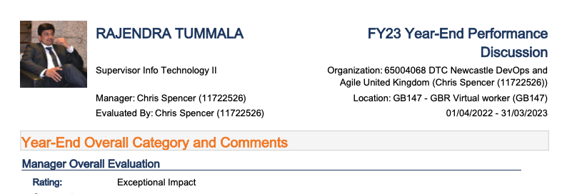
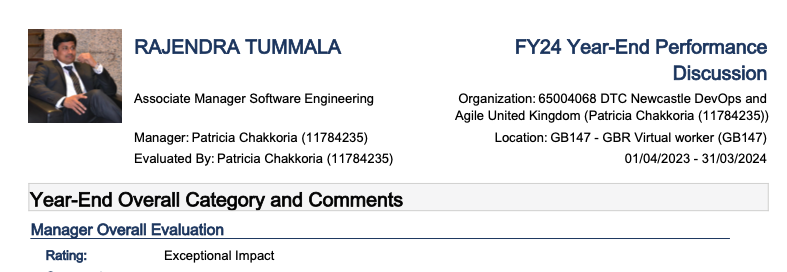

Agile delivery management
Lead delivery across Scrum, SAFe, hybrid, and waterfall environments with clear planning, stakeholder alignment, and governance.
Agile Delivery | Scrum Master | PSM I | SAFe Practitioner
I help enterprise teams deliver complex Agile, SAFe, hybrid, and waterfall transformation programmes with people-first leadership, clear governance, stakeholder alignment, and data-driven delivery management.
Backlog | RAID | Metrics | Governance
Senior delivery partner
I am a Newcastle upon Tyne based Agile Delivery Manager, PSM I certified Scrum Master, and SAFe Practitioner with 15+ years across the full Software Development Life Cycle.
My work sits between delivery leadership and team enablement: PI Planning, sprint optimisation, release planning, RAID management, Agile dashboards, stakeholder engagement, programme governance, and continuous improvement.
I focus on helping distributed teams build psychological safety, reduce delivery risk, influence without direct authority, and create predictable outcomes across regulated enterprise environments.
How I can help
Lead delivery across Scrum, SAFe, hybrid, and waterfall environments with clear planning, stakeholder alignment, and governance.
Facilitate sprint planning, daily stand-ups, backlog refinement, sprint reviews, retrospectives, and impediment removal.
Support programme increment planning, dependency mapping, release planning, capacity planning, and cross-team coordination.
Build delivery visibility using velocity trends, burn-down charts, KPI reporting, delivery dashboards, and actionable Agile metrics.
Manage RAID logs, remove blockers, coordinate dependencies, and protect delivery momentum across complex enterprise teams.
Mentor teams to improve Agile maturity, psychological safety, ownership, collaboration, delivery quality, and continuous improvement habits.
Delivery and governance capabilities
Turn business goals, OKRs, and roadmap priorities into clear team plans, sprint goals, release plans, and delivery roadmaps.
Keep delivery moving through transparent ceremonies, active blocker removal, and consistent team routines.
Protect delivery confidence through RAID management, budget awareness, PMO collaboration, stakeholder reporting, and clear escalation paths.
Use metrics, coaching, structured retrospectives, and AI productivity tools to improve maturity and predictability.
Scrum, SAFe, Kanban, Agile ceremonies, release planning, continuous delivery, CI/CD, and hybrid delivery.
Improved predictability, stronger team alignment, clearer reporting, smoother governance, and better delivery flow.
Jira, Confluence, Azure DevOps, TFS, Microsoft Project, Lucid, Microsoft 365, Power BI, Microsoft Copilot, Claude AI, Amazon Q Developer, OpenAI Codex, and Zapier AI.
Velocity tracking, burn-down charts, delivery dashboards, KPI reporting, and trend analysis.
Insurance, banking, energy, automotive, and regulated enterprise technology environments.
AWS, Microsoft Azure, Google Cloud, API architecture, microservices, DevOps practices, cloud migration, and distributed teams.
Skills and tools
Featured work
DXC Technology / Lloyds Insurance
Led three Agile delivery teams within a major £500M London Insurance Markets transformation programme.
Energy sector cloud migration
Led delivery coordination for a cloud migration programme across business, engineering, operations, and testing teams.
Enterprise onboarding improvement
Introduced structured documentation and step-by-step guides to improve onboarding consistency and productivity.
Experience highlights
Delivery Manager leading three Agile teams on Lloyds Insurance Blueprint 2, a £500M SAFe transformation programme.
Agile Scrum Master delivering a large-scale cloud migration programme for Electralink in the Ofgem regulated UK Energy sector.
Senior Test Lead managing system and performance testing, Kanban tracking, defect workflows, and global testing teams.
Test Analyst executing end-to-end testing, test design, defect management, and release quality collaboration.
Business Manager overseeing operations, finances, team leadership, mentoring, and workflow efficiency.
Test Analyst performing UAT for CTL, FCRM, and NACS systems to validate business requirements.
Achievements and performance reviews
FY23 Performance Review
Awarded the highest performance category for the FY23 year-end review at DXC Technology.

FY24 Performance Review
Continued to receive the highest performance category while working as Associate Manager Software Engineering.

FY25 Performance Review
Achieved a third consecutive exceptional year-end rating for FY25.
LinkedIn recommendations
Ganesh Chandrawale · 2026
“He didn't just manage timelines; he jumped into the trenches with the dev team to debug SIT defects.”
Shows technical depth, leadership under pressure, hands-on delivery management, and a strong transition from Test Lead to Delivery Lead.
Cathleen Spence · 2026
“Raj is a natural leader who consistently puts his team first, supporting, protecting, and enabling them to succeed.”
Positions Rajendra as a senior leader with strong servant leadership, team protection, and people-first delivery behaviours.
Shruti Saxena · 2025
“He anticipates challenges before they arise, resolves blockers efficiently, and always keeps the team aligned on goals and deadlines.”
Highlights stakeholder management, strategic thinking, blocker removal, delivery control, and team alignment.
Trust indicators
Regulated sectors
Strong experience in regulated enterprise programmes where delivery quality, governance, and stakeholder confidence matter.
Ways of working
Practical delivery leadership across Scrum, SAFe, Kanban, DevOps-enabled delivery, and continuous improvement.
Leadership style
Servant leadership focused on coaching, psychological safety, team maturity, and delivery outcomes.
Certifications and education
Available for Agile delivery and Scrum Master roles
Let’s discuss Agile delivery management, Scrum Master leadership, SAFe programme support, delivery dashboards, stakeholder alignment, or transformation delivery roles.